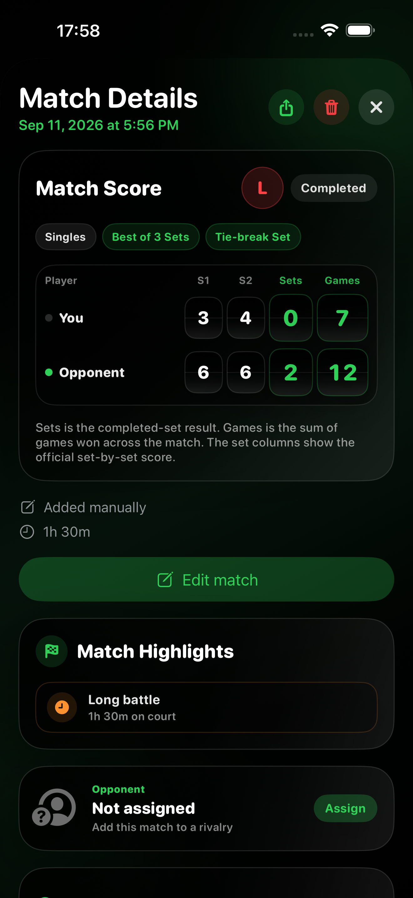
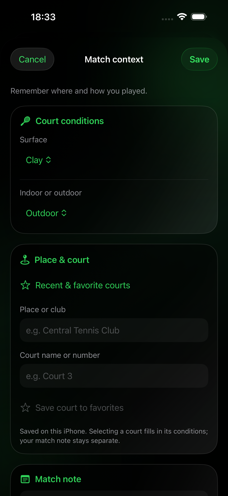

Hilfe-Center
Zählen Sie auf der Apple Watch oder tragen Sie gespielte Matches in Companion auf dem iPhone ein. Hilfe zu Platzdetails, Notizen, Highlights, Teilen, Rivalitäten, Formaten, Trainings und iCloud-Sync.
Erste Schritte
Alles, was Sie brauchen, um Tennis Score Wizard einzurichten und Ihr erstes Match zu zählen.
Für Live-Punkte brauchen Sie eine kompatible Apple Watch mit Tennis Score Wizard. Companion auf dem iPhone erlaubt außerdem nachträgliche Matcheinträge. Health-Zugriff ist optional und dient nur Trainingsaufzeichnungen und verfügbaren Trainingsmesswerten.
Öffnen Sie die App auf der Apple Watch, wählen Sie Einzel oder Doppel sowie One Set, Best of 3 oder Best of 5. Legen Sie Satz- und Spielregeln und den ersten Aufschläger fest, aktivieren Sie optional die Trainingsaufzeichnung und starten Sie das Match.
Ja. Die zuletzt verwendete Matchkonfiguration wird gespeichert, damit Sie ein ähnliches Match beim nächsten Mal schneller vorbereiten können. Vor dem Start lassen sich alle Optionen ändern.
Ja. Zählung, Matchstatistiken und Verlauf funktionieren ohne Health-Berechtigung. Sie wird nur für Trainingsaufzeichnung und Gesundheitswerte wie Herzfrequenz und aktive Energie benötigt.
Gespielte Matches hinzufügen und bearbeiten
Companion auf dem iPhone · Bekannte Ergebnisse neben Ihrem Watch-Verlauf speichern.
Ja. Öffnen Sie die Matchdetails und tippen Sie auf Edit match. Sie können Datum, Zeit, Dauer, Regeln, Satzstände, Tie-Break-Punkte und den Abschlussstatus korrigieren. Save aktualisiert den vorhandenen Eintrag ohne Duplikat; Cancel verwirft die Änderungen. Einzel/Doppel und Spieler bleiben in diesem Formular unverändert. Gegnerzuordnung und Platzdetails bearbeiten Sie separat.
Ja. Korrekturen aktualisieren denselben Eintrag auf der gekoppelten Companion-Watch und können über die private iCloud-Datenbank mit demselben Apple Account an Standalone übertragen werden. Halten Sie die Apps aktuell und warten Sie die Synchronisierung ab. Relevante Statistiken und verlaufsbasierte Highlights berücksichtigen das korrigierte Ergebnis. Manuelle Matches bleiben gekennzeichnet; fehlende Punkt- oder Trainingsdaten werden nicht erfunden.
Tippen Sie im Tab Matches auf den Eintrag eines gespielten Matches. Wählen Sie Einzel oder Doppel, geben Sie optional einen Gegnernamen ein oder wählen Sie für ein Einzel einen gespeicherten Spieler. Legen Sie das Format fest, tragen Sie die Satzergebnisse ein und speichern Sie die Angaben.
Ja. Wählen Sie gestoppt, wenn das Spiel endete, bevor nach dem gewählten Format ein Sieger feststand. Tragen Sie den erreichten Stand einschließlich eines offenen Satzes ein. Auch ein Gleichstand ist möglich. Wählen Sie beendet nur, wenn das Ergebnis einen Sieger nach den gewählten Regeln ergibt.
Geben Sie zuerst die Spiele ein. Entspricht der Stand nach Ihren Satzregeln einem Tie-Break, etwa 7–6, erscheinen zusätzliche Felder für beide Punktzahlen. Tragen Sie beide ein oder lassen Sie beide leer. Beim entscheidenden Match-Tie-Break werden direkt Punkte statt Spiele eingetragen; mehr dazu unten.
Aktivieren Sie für den Entscheidungssatz bei Best of 3 oder Best of 5 den Match-Tie-Break, wählen Sie das Ziel von 7 oder 10 Punkten und geben Sie in der entscheidenden Zeile direkt Punkte ein — etwa 10–8, nicht 1–0 in Spielen. Bestand das gesamte Match aus einem Match-Tie-Break, wählen Sie Match Tie-break als Satzregel. Ein beendeter Match-Tie-Break erfordert zwei Punkte Vorsprung.
Wählen Sie gestoppt und tragen Sie den gleichen Spielstand ein, bei dem der Tie-Break begann, etwa 6–6. In den zusätzlichen Feldern können Sie beide Punktzahlen beim Abbruch eintragen. Sind sie unbekannt, lassen Sie beide leer. Die App ergänzt keine geschätzten Punkte.
Wählen Sie Start und Ende und geben Sie beide Daten und Uhrzeiten ein. Die Dauer wird berechnet. Endete das Match nach Mitternacht, setzen Sie das Enddatum auf den nächsten Tag. Alternativ können Sie Ende und Dauer wählen und Minuten eingeben. Ist die Dauer unbekannt, lassen Sie sie leer. Eine angegebene Dauer muss zwischen einer Minute und 24 Stunden liegen.
Das Formular erfasst bereits gespielte Matches, keine geplanten. Das Ende darf nicht in der Zukunft liegen. Bei Start und Ende muss der Start vor dem Ende liegen.
Tippen Sie direkt auf eine Spielstandskachel oder nutzen Sie Zurück und Weiter über der Tastatur. Nach einer Ziffer springt der Cursor nicht automatisch weiter, damit zweistellige Werte möglich sind. Fertig, ein Tipp außerhalb des Felds oder Scrollen schließt die Tastatur.
Ergebnis, Sätze, Spiele, eingegebene Tie-Break-Ergebnisse und optionale Dauer können in passende Verläufe und Zusammenfassungen eingehen. Punktverläufe, Aufschlag-, Return-, Breakball- und Trainingswerte werden nicht rekonstruiert. Das Match wird als manuell hinzugefügt markiert; nicht verfügbare Detailkarten bleiben verborgen.
Ja. Gespeicherte manuelle Einträge können zur gekoppelten Companion-Watch und über den privaten iCloud-Sync zu Standalone unter demselben Apple Account gelangen. Beide Watch-Apps behalten die Kennzeichnung und blenden fehlende Statistiken aus. Halten Sie beide Produkte aktuell und warten Sie den Sync ab.
Nein. Ein gespieltes Match hinzuzufügen ist nicht dasselbe wie eine Watch-Aufzeichnung zu bearbeiten. Bei bestehenden Matches können Sie Gegnerzuordnung und optionalen Kontext ändern, ohne Spielstand oder Statistiken anzutasten.


Platz und Matchdetails festhalten
Alles optional. Ergänzen Sie den Kontext beim Eintragen oder später in den Matchdetails auf dem iPhone.
Belag, Halle oder Freiluft, Ort oder Club, Platzname oder -nummer und eine private Notiz zu genau diesem Match. Auch ältere Apple-Watch-Matches lassen sich ergänzen.
Nein. Orts- und Platznamen werden von Hand eingetragen. Die Funktion sucht keine Plätze auf einer Karte und zeichnet keine GPS-Position auf.
Ja, über zuletzt verwendete und favorisierte Plätze. Favoriten werden auf diesem iPhone getrennt nach Apple Account gespeichert. Die Auswahl übernimmt Ort und Bedingungen, nicht aber die Notiz eines anderen Matches. Die Favoritenliste selbst wird nicht über iCloud synchronisiert.
Platzdetails und Matchnotizen werden mit dem Ergebnis direkt zwischen gekoppelten Geräten und über den privaten iCloud-Sync übertragen. Ursprünglicher Spielstand und Statistiken bleiben unverändert. Kontext wird auf dem iPhone angezeigt und bearbeitet; die Watch bewahrt ihn für den Sync auf, bietet aber keinen Kontexteditor.
Eingetragene Platzbedingungen und der Ort erscheinen auf der Matchkarte. Private Match- und Rivalitätsnotizen bleiben ausgeschlossen. Prüfen Sie die Vorschau, besonders wenn Sie den Spielort nicht offenlegen möchten.
Nein. Belag, Halle oder Freiluft, Ort und Notizen beschreiben die Spielbedingungen. Sie beeinflussen keine Match-Highlights und erzeugen keine platz- oder belagsspezifischen Rekorde.
Match-Highlights und Teilen
Es gibt 26 Ereignistypen, nicht automatisch 26 Karten pro Match. Die Matchdetails auf dem iPhone zeigen alle passenden, durch gespeicherte Daten belegten Highlights. Ein geteiltes Bild zeigt bis zu sechs besonders bemerkenswerte Momente. Gibt es keine passenden Highlights, entfällt der Abschnitt.
Zum Beispiel Comebacks, Entscheidungssätze oder Match-Tie-Breaks, enge Tie-Breaks, Ergebnisse ohne Satzverlust, Serien, Jubiläumssiege, persönliche Rekorde sowie Aufschlag- und Returnmuster. Einige brauchen aufgezeichnete Punktstatistiken, andere lassen sich aus Satzergebnis und Verlauf ableiten.
Nein. Sie beziehen sich auf den in der App gespeicherten Verlauf. Ein älteres Ergebnis nachzutragen, ein Match zu löschen oder den Gegner zu ändern kann Vergleichen Sie und Rivalitäts-Highlights verändern. Spätere Matches zählen nicht als Vorgeschichte eines älteren Ergebnisses. Jubiläumssiege basieren auf berücksichtigten, vollständig beendeten Siegen.
Stats und Rivalitäten können gestoppte Matches mit eindeutigem Führenden als entschiedene Ergebnisse zählen. Serien- und Jubiläums-Highlights verwenden beendete Siege; ein offenes Match zählt dafür nicht. Beide Auswertungen nutzen den für ihren Vergleich verfügbaren Verlauf.
Nein. Match-Highlights erscheinen in den iPhone-Matchdetails von Companion und auf geteilten Bildern. Der Watch-Verlauf zeigt Ergebnis und verfügbare Statistiken ohne eigenen Highlight-Abschnitt.
Aus dem Endstand lässt sich kein Punktverlauf nachweisen. Manuelle Matches zeigen belegbare Ergebnis- oder Verlaufs-Highlights, aber keine erfundenen Aufschlag-, Return-, Breakball- oder Trainingswerte.
Match einrichten
Wählen Sie das Format und die Regeln, nach denen Sie tatsächlich spielen.
Wählen Sie Einzel für ein Match mit einer Person pro Seite und Doppel für zwei Personen pro Seite. Das Format wird mit dem Match gespeichert und auch für ein aufgezeichnetes Training verwendet.
Bei Best of 3 gewinnt die Seite, die zuerst zwei Sätze gewinnt. Bei Best of 5 sind drei gewonnene Sätze erforderlich.
Der gewählte Satz ist das gesamte Match. Die Satzregel bestimmt weiterhin Game-Ziel und Tie‑Break.
Wählen Sie die Satzregel, die zu Ihrem Format passt. Klassische Sätze gehen bis sechs Spiele, offizielle Short Sets bis vier, und mit Custom Set legen Sie die Parameter selbst fest. Die App wendet die vollständige Regel automatisch an.
Ein Short Set geht bis vier Games. Legen Sie fest, ob der Tie‑Break bei 3–3 oder 4–4 beginnt und ob er bis 7 Punkte mit zwei Punkten Vorsprung oder mit einem Entscheidungspunkt bei 4–4 gespielt wird.
Nur die Game-Regel: Bei Einstand entscheidet der nächste Punkt. Das lässt sich mit jedem verfügbaren Satzformat kombinieren.
Custom Set lässt Sie Spielziel, nötigen Vorsprung, einen optionalen Tie-Break samt Startpunkt, Punktziel und Vorsprung wählen. Sie können etwa bis acht Spiele spielen. Die Zusammenfassung zeigt alle Regeln gemeinsam zur Kontrolle.
Nein. Die Matchlänge bestimmt die benötigten Sätze, die Satzregel das Satzende, Standard oder No‑Ad den Einstand und der optionale Match‑Tie‑Break ersetzt nur den entscheidenden letzten Satz.
Sie können ihn während der Einrichtung manuell auswählen oder den integrierten Münzwurf verwenden.
Der Münzwurf erzeugt ein zufälliges Ergebnis und hilft bei der Entscheidung über den ersten Aufschläger. Vor dem Match können Sie das Ergebnis bestätigen oder die Einrichtung anpassen.
Wenn die Option aktiviert und Health autorisiert ist, startet zusammen mit dem Match ein Tennistraining. Verfügbare Herzfrequenz-, Aktivenergie- und Zeitdaten können erfasst und in der Health-App gespeichert werden.
Ein Match zählen
Erfassen Sie jeden Punkt, während die App die Tenniszählung automatisch verwaltet.
Wählen Sie über die Zählsteuerung, ob Sie oder Ihr Gegner den Punkt gewonnen haben. Der Spielstand wird sofort aktualisiert.
Ja. Punkte, Spiele, Sätze, Einstand, Vorteil und Tie‑Break werden entsprechend den gewählten Regeln automatisch fortgeführt.
Bei Standard Game beginnt bei 40–40 Einstand: Eine Seite muss erst Vorteil erlangen und danach den nächsten Punkt gewinnen. Bei No‑Ad entscheidet bereits der nächste Punkt das Game.
Wenn die gewählte Regel einen Tie‑Break verlangt, wechselt die App von normalen Tennispunkten zu numerischen Tie‑Break-Punkten.
Er ersetzt den entscheidenden letzten Satz. Öffnen Sie bei 1:1 Sätzen in Best of 3 oder 2:2 in Best of 5 das Menü, bevor der Entscheidungssatz beginnt, wählen Sie Match Tie‑Break und anschließend 7 oder 10 Punkte. Gewonnen wird mit zwei Punkten Vorsprung. Die Funktion gilt für Einzel und Doppel; das Ergebnis wird in Verlauf, Details, Statistiken und Share-Karten gespeichert.
Ein Satz-Tie‑Break entscheidet meist bei 6:6 einen einzelnen Satz, der als 7:6 gespeichert wird. Ein Match‑Tie‑Break ersetzt den gesamten Entscheidungssatz und wird separat angezeigt, zum Beispiel [10–7].
Bei Ihrem Aufschlag zeigt der Tennisball die richtige Aufschlagseite. Beim Aufschlag des Gegners wird dessen Seite aus Ihrer Blickrichtung auf die Uhr dargestellt.
Der Aufschläger wechselt automatisch nach Spielen und während des Tie‑Breaks. Falls Anzeige und echtes Match nicht übereinstimmen, können Sie ihn im Menü korrigieren.
Die App zeigt bei den entsprechenden Spielständen einen Seitenwechsel-Hinweis. Er dient als Erinnerung und verschwindet, sobald das Spiel fortgesetzt wird.
Matchsteuerung
Korrigieren Sie Fehler, verwalten Sie das laufende Match und beende ein unvollständiges Match sicher.
Rückgängig entfernt den zuletzt erfassten Punkt und stellt Punkte, Spiele, Sätze, Aufschläger, Aufschlagseite, Tie‑Break-Zustand und zugehörige Statistiken wieder her.
Im laufenden Match bietet das Menü zusätzliche Aktionen, etwa Aufschläger korrigieren, Verlauf öffnen, Match stoppen oder ein neues Match vorbereiten.
Nutzen Sie die Funktion, wenn der angezeigte Aufschläger nicht mit dem echten Match übereinstimmt. Der Aufschläger wird korrigiert, ohne den Spielstand zu verändern.
Ein unvollständiges Match kann mit aktuellem Spielstand, Dauer, abgeschlossenen Sätzen, laufendem Satz, Punkten und verfügbaren Statistiken gespeichert werden. Im Verlauf bleibt es als „Gestoppt“ gekennzeichnet. Führte eine Seite, zählt das Ergebnis außerdem für Matchbilanz, Siegquote und Serien; bei Gleichstand bleibt es neutral.
Ja. Nach Abschluss oder Stoppen können Sie zur Einrichtung zurückkehren und ein neues Match beginnen. Die vorherige Konfiguration steht erneut zur Verfügung.
Verwenden Sie möglichst sofort Rückgängig. Dadurch wird der vollständige Zustand vor dem falschen Punkt wiederhergestellt, statt den Fehler mit einem weiteren Punkt auszugleichen.
Die App speichert nur den tatsächlich erfassten Spielfortschritt. Sie fügt einem leeren Match keine erfundenen Punkte, Games, Statistiken oder Trainingswerte hinzu.
Gegner und Rivalitäten
Wählen Sie auf der Apple Watch einen gespeicherten Einzelgegner und erstellen Sie automatisch eine private Head‑to‑Head-Bilanz.
Öffnen Sie Rivalitäten in Companion auf dem iPhone. Geben Sie dort den vollständigen Namen und einen kurzen Namen für die Watch ein. Der Watch-Name ist auf 16 Zeichen begrenzt, damit er beim Einrichten und während des Matches gut lesbar bleibt. Standalone auf der Apple Watch kann anschließend synchronisierte Gegner auswählen, aber keine Profile anlegen oder bearbeiten.
Halten Sie in Rivalitäten auf dem iPhone die Karte des Spielers gedrückt, wählen Sie „Spieler löschen“ und bestätigen Sie. Zugeordnete Matches bleiben im Matchverlauf erhalten und sind anschließend keinem Spieler zugeordnet. Sie können sie später einem anderen Spieler zuordnen.
Wählen Sie beim Einrichten Einzel, öffnen Sie Gegner und wählen Sie Gast oder einen gespeicherten Spieler. Ein Gast-Match wird normal gespeichert, aber keiner Rivalität hinzugefügt. Bei einem Doppel wird dem Team-Match kein einzelner Gegner zugeordnet.
Berücksichtigt werden entschiedene Einzelmatches, die diesem Spieler zugeordnet sind. Abgeschlossene Matches und vorzeitig beendete Matches mit einer klar führenden Seite zählen; ein bei Gleichstand beendetes Match bleibt neutral. Wenn die Daten aufgezeichnet wurden, können außerdem Sätze, Games, Tie‑Breaks, Punkte, Aufschlag und Return, Breakbälle, Spielzeit, Trainingsdaten und alle gespeicherten Begegnungen angezeigt werden.
Verglichen wird Ihre Match-Siegquote in den letzten fünf entschiedenen Begegnungen mit der Siegquote im gesamten ausgewählten Zeitraum. Gibt es weniger als fünf entschiedene Matches, werden die vorhandenen verwendet. Der Vergleich folgt dem Filter Gesamter Zeitraum, Dieses Jahr oder Letzte 30 Tage.
Das ist ein entschiedenes Match, das Sie gewonnen haben, nachdem Sie den ersten abgeschlossenen Satz verloren hatten. „2 von 5“ bedeutet zwei solche Siege aus fünf passenden Matches, die mit einem verlorenen ersten Satz begonnen haben. Es ist keine Begrenzung der Versuche.
Die aktuelle Serie ist die jüngste ununterbrochene Folgen Sie entschiedener Siege oder Niederlagen. Die beste Siegesserie ist die längste ununterbrochene Folgen Sie gewonnener entschiedener Matches im ausgewählten Zeitraum.
Ja. Öffnen Sie das gespeicherte Einzel auf dem iPhone, tippen Sie im Bereich Gegner auf „Zuordnen“ und wählen Sie den richtigen Spieler. Die Zuordnung lässt sich später ändern oder entfernen, ohne Ergebnis oder Statistiken zu verändern. Die Änderung wird an den Companion-Verlauf auf der gekoppelten Apple Watch und über die private iCloud-Synchronisierung an Standalone übertragen.
Jeder Spieler besitzt eine feste interne Kennung. Beim Anlegen werden außerdem vereinheitlichte vollständige Namen und Watch-Namen geprüft. Die Synchronisierung verwendet die feste Kennung und Löschinformationen, damit auf einem anderen Gerät dasselbe Profil aktualisiert und nicht neu angelegt wird.
Nein. Eine private Notiz bleibt im Rivalitätsprofil und wird weder in Text noch in Bildkarten aufgenommen. Geteilte Karten verwenden den aktiven Zeitfilter und erscheinen immer in derselben Reihenfolge: Bilanz und letzte Begegnungen, Matchleistung, danach Muster und Trainingskontext.
Matchstatistiken verstehen
Hier erfahren Sie, was die gespeicherten Werte bedeuten und wie sie entstehen.
Sie zeigen, wie viele Punkte während des Matches erfasst wurden. Die Zusammenfassung trennt Ihre gewonnenen Punkte von den Punkten des Gegners.
Erfasste Games enthalten Punkt-für-Punkt-Daten. Bei einem gestoppten Match kann auch das aktuelle unvollständige Game enthalten sein; der Wert ist daher nicht der offizielle Spielstand.
Sie zeigen Breakpoints gegen Sie und abgewehrte Breakpoints bei eigenem Aufschlag sowie Breakpoint-Chancen und verwandelte Breakpoints beim Return. Tie‑break-Punkte sind ausgeschlossen.
Ja. Sie werden aus den erfassten Punkten berechnet. Rückgängig nimmt auch die statistische Auswirkung des letzten Punkts zurück.
Ein gestopptes Match enthält nur Situationen, die bis zum Stoppen tatsächlich stattgefunden haben. Werte, die spätere Ereignisse oder einen regulären Abschluss benötigen, können fehlen.
Matches aus früheren App-Versionen enthalten möglicherweise nicht alle später hinzugefügten Werte. Die App behält die damals gespeicherten Daten bei, statt fehlende Informationen zu erfinden.
Companion und iPhone synchronisieren
Erfassen Sie den Spielstand auf der Apple Watch und sehen Sie sich anschließend den synchronisierten Matchverlauf, Ergebnisse, Statistiken und Trainingsdaten auf dem iPhone an.
Live-Matchsetup und laufende Punkte bleiben auf der Apple Watch. Companion auf dem iPhone erlaubt gespielte Ergebnisse, optionale Platzdetails, Matchansichten und geteilte Highlights. Der manuelle Eintrag ist keine Live-Anzeigetafel auf dem iPhone.
Auf dem iPhone sehen Sie letztes Ergebnis und Verlauf, einschließlich manueller Matches, Satz- und Tie-Break-Stände, optionaler Platzdetails und belegbarer Highlights. Watch-Aufzeichnungen können zusätzlich Punkt-, Aufschlag-, Return-, Breakball- und Matchverlaufsstatistiken sowie Trainingszusammenfassungen enthalten.
Companion nutzt zwei unabhängige Synchronisierungswege. Watch Connectivity kann ein gespeichertes Match direkt zwischen der gekoppelten Apple Watch und dem iPhone übertragen. Wenn beide Geräte verfügbar sind, ist dies meist der schnellste lokale Weg. CloudKit übernimmt unabhängig davon die dauerhafte iCloud-Synchronisierung und Wiederherstellung zwischen Standalone und Companion unter demselben Apple Account. Keiner der beiden Wege muss vor dem anderen abgeschlossen sein. Liefern beide dasselbe Match, behalten die Apps einen einzigen aktuellen Datensatz.
Prüfen Sie, ob die richtige Apple Watch gekoppelt ist, halten Sie beide Geräte in der Nähe und öffnen Sie Tennis Score Wizard auf Apple Watch und iPhone. Stellen Sie außerdem sicher, dass beide Geräte den vorgesehenen Apple Account verwenden, und prüfen Sie den iCloud-Status im Verlauf. Ein gespeichertes Match bleibt während der Wartezeit lokal geschützt und kann synchronisiert werden, sobald entweder die Verbindung zum gekoppelten Gerät oder iCloud verfügbar ist.
Wenn Trainingsdaten verfügbar sind, kann Companion Matchdauer, durchschnittliche Herzfrequenz, maximale Herzfrequenz und aktive Energie zusammen mit dem gespeicherten Match auf beiden Geräten anzeigen.
Wenn Sie in Companion ein Match oder den gesamten Verlauf löschen, wird die Änderung zwischen iPhone und Apple Watch und, sobald verfügbar, über iCloud synchronisiert. Vor dem Löschen des gesamten Verlaufs fordert die App eine Bestätigung an.
Ja. Companion kann die aktualisierte Zuordnung direkt an die gekoppelte Apple Watch übertragen. Standalone erhält sie über die private iCloud-Synchronisierung, wenn dieselbe Apple-ID verwendet wird.
iCloud-Synchronisierung und Wiederherstellung
Synchronisiere gespeicherte Matches zwischen Standalone und Companion, ohne ein Tennis Score Wizard-Konto anzulegen.
Stellen Sie sicher, dass Apple Watch und bei Companion auch das iPhone denselben Apple Account verwenden. Aktivieren Sie iCloud Drive, stellen Sie eine Internetverbindung bereit und geben Sie der ersten Synchronisierung Zeit. Sie können auch ohne iCloud weiterzählen.
Ja. Beide Versionen verwenden denselben iCloud-Speicher für gespeicherte Matches. Mit demselben Apple Account kann ein in Standalone gespeichertes Match in Companion erscheinen und umgekehrt.
Öffnen Sie den Verlauf und prüfen Sie die iCloud-Zeile. Synced bedeutet, dass die letzte Synchronisierung erfolgreich abgeschlossen wurde, und zeigt Datum und Uhrzeit. Syncing bedeutet, dass die Synchronisierung läuft. Waiting mit Saving bedeutet, dass eine lokale Änderung sicher für iCloud vorgemerkt ist. Sync paused mit Retry bedeutet, dass der letzte Versuch nicht abgeschlossen werden konnte; tippen Sie auf die Zeile, um es erneut zu versuchen.
Jeder Apple Account hat einen eigenen privaten CloudKit-Matchverlauf. Die Verläufe verschiedener Accounts bleiben getrennt und werden nicht zusammengeführt. Erkennt die App einen Wechsel, zeigt sie den lokalen und den iCloud-Verlauf des aktuellen Apple Accounts an. Nach dem Zurückwechseln erscheint der Verlauf des vorherigen Accounts nach der Synchronisierung wieder. Bevor dessen lokaler Cache von diesem Gerät entfernt wird, bleiben noch nicht synchronisierte Matches in einer verschlüsselten Wiederherstellungskopie erhalten, die diesem Account zugeordnet ist. Sie werden nicht in den neuen Account hochgeladen. Ein Accountwechsel löscht außerdem keine Datensätze, die bereits in der iCloud-Datenbank eines der beiden Accounts gespeichert sind.
Ja, wenn die Matches vor dem Entfernen der App erfolgreich synchronisiert wurden. Prüfen Sie vorher, ob im Verlauf Synced angezeigt wird. Verwenden Sie nach der Neuinstallation denselben Apple Account, lassen Sie iCloud Drive aktiviert, öffnen Sie die App und geben Sie dem Download etwas Zeit.
Nein. Durch das Entfernen der App werden bereits mit iCloud synchronisierte Matchdatensätze nicht automatisch gelöscht. Nach einer Neuinstallation können sie erneut geladen werden. Wenn Sie Matches in Tennis Score Wizard löschen, werden diese Löschungen synchronisiert, sobald iCloud verfügbar ist.
Nein. CloudKit speichert synchronisierte Datensätze in der privaten Datenbank Ihres Apple Accounts. Standardmäßig kann nur dieser Benutzer auf die private Datenbank zugreifen.
Health und Trainings
Zeichnen Sie Ihr Tennistraining auf und verstehen Sie die Gesundheitswerte nach dem Match.
Aktivieren Sie bei der Einrichtung „Training aufzeichnen“ und erteilen Sie die erforderliche Berechtigung für Health-Daten. Das Training beginnt mit dem Match und endet, wenn das Match abgeschlossen oder gestoppt wird.
Während eines aufgezeichneten Trainings wird die aktuelle Herzfrequenz angezeigt, sobald Health autorisiert ist und die Apple Watch einen Messwert bereitstellt.
Die durchschnittliche Herzfrequenz basiert auf den verfügbaren Messwerten des Trainings. Die maximale Herzfrequenz ist der höchste während dieses Trainings erfasste Wert.
Aktive Energie ist die geschätzte Energiemenge, die während der Aktivität verbraucht wurde. Apple Watch und Health berechnen sie aus den verfügbaren Gesundheits- und Bewegungsdaten.
Nach erfolgreichem Abschluss wird es in der Health-App gespeichert und kann abhängig von Berechtigungen und Synchronisierung auch in Apples Fitness-App erscheinen.
Einige Messwerte werden von Health erst nach dem Trainingsende finalisiert. Warten Sie kurz auf Verarbeitung und Synchronisierung und öffnen Sie das abgeschlossene Match danach erneut.
Mögliche Gründe sind fehlende Berechtigungen, zu wenige Sensormessungen, deaktivierte Trainingsaufzeichnung oder noch nicht abgeschlossene Verarbeitung durch Health.
Ja. Matchspielstand und Matchverlauf sind von Health getrennt. Ein Problem mit Health oder den Trainingsdaten verhindert nicht das Speichern des Matches.
Matchverlauf
Filtern Sie den Verlauf nach Jahr und Monat sowie nach Einzel oder Doppel. Ältere Einträge werden beim Durchblättern nachgeladen, während der gesamte gespeicherte Verlauf erhalten bleibt.
Tippen Sie in History auf Period, wählen Sie ein Jahr und dann einen Monat oder Entire year für das ganze Jahr. Angeboten werden nur Jahre und Monate mit gespeicherten Matches. All dates setzt den Zeitraum zurück; All, 1v1 und 2v2 filtern den Matchtyp. Das funktioniert in Companion und Standalone.
Nein. Zunächst erscheinen 50 passende Einträge, danach werden ältere Matches in Gruppen von 50 nachgeladen. Sie können auch Load older matches antippen. Die Zusammenfassung berücksichtigt alle passenden Einträge, nicht nur die erste Seite. Die Zeitraumliste basiert auf dem gesamten gespeicherten Verlauf; ältere Matches werden nicht gelöscht.
Win bedeutet, dass Sie das abgeschlossene Match nach Sätzen gewonnen haben. Loss bedeutet, dass der Gegner das abgeschlossene Match nach Sätzen gewonnen hat.
Das Match wurde vor seinem regulären Ende gespeichert. Der bis dahin erfasste echte Matchstand bleibt erhalten. Ein gestopptes Match mit einem Führenden zählt für Matchbilanz, Siegquote und Serien; bei Gleichstand bleibt es neutral.
S1 bis S5 stehen für Satz 1 bis Satz 5. Je nach Match zeigt ein beendetes oder gestopptes Ergebnis ein bis fünf reguläre Sätze. S1 6–3 bedeutet beispielsweise, dass der erste Satz sechs Spiele zu drei endete.
TB zeigt die Tie‑Break-Punkte innerhalb des Satzes. „7–6 · TB 7–3“ bedeutet, dass der Satz 7–6 und der Tie‑Break 7–3 endete.
In der kompakten Ergebniszeile ist die kleine Klammerzahl die Tie-Break-Punktzahl des Verlierers. 7–6(6) bedeutet einen mit 8–6 gewonnenen Tie-Break. Die Satztabelle kann beide Punktzahlen zeigen, sofern aufgezeichnet.
Zuerst werden gewonnene abgeschlossene Sätze verglichen. Bei Gleichstand folgen die Spiele im laufenden, offenen Satz, dann aufgezeichnete Tie-Break- oder Spielpunkte. Spiele früherer Sätze werden nicht zusammengezählt, um den Führenden zu bestimmen. Zwischen Sätzen ist das Match bei ausgeglichenen Satzgewinnen unentschieden. Ein klarer Führender zählt in der Statistik als Sieger beziehungsweise Verlierer; die Kennzeichnung als gestoppt bleibt.
Wenn der laufende Satz bereits Fortschritt enthält, wird er zusammen mit dem Match gespeichert, etwa als „S3 0–1“.
Ein Match kann Format, Ergebnis, Satz- und Tie-Break-Stände, Zeitangaben und Gegnerzuordnung enthalten. Manuelle Einträge sind entsprechend markiert. Auf dem iPhone können Sie Platzbedingungen, Ort und private Notiz ergänzen. Punkt- und Trainingsstatistiken erscheinen nur, wenn sie aufgezeichnet wurden, nicht aus einem manuellen Ergebnis rekonstruiert.
Ja. Verwenden Sie die Löschaktion im Matchverlauf und bestätigen Sie sie. Dadurch wird der gespeicherte Eintrag aus der App entfernt.
Tie-Break-Punkte stehen neben dem Spielstand. Bei zweistelligen Spielzahlen können sich die Zellen verbreitern, damit die Zahlen lesbar bleiben. Ein entscheidender Match-Tie-Break erscheint separat in Klammern, etwa [10–7]. Geteilter Text enthält das vollständige Ergebnis ebenfalls gut lesbar.
Satz-Tie‑Breaks erscheinen kompakt hochgestellt, ohne Größe oder Abstand des eigentlichen Satzergebnisses zu verändern. Ein entscheidender Match‑Tie‑Break steht separat in eckigen Klammern, zum Beispiel [10–7].
Freiwillige Unterstützung der Entwicklung
Eine einmalige Unterstützung hilft bei der Weiterentwicklung, schaltet aber keine Funktionen frei und verändert die App nicht.
Nein. Apple-Trinkgelder und Unterstützung per Kryptowährung sind freiwillig. Alle Funktionen bleiben entsprechend dem gekauften Produkt verfügbar, unabhängig davon, ob Sie etwas spenden.
Wählen Sie unter Info → Entwicklung unterstützen einen einmaligen Betrag und bestätigen Sie ihn im Kaufdialog von Apple. Apple verarbeitet die Zahlung mit der Zahlungsmethode Ihres App-Store-Accounts.
Prüfen Sie vor dem Senden Währung, Netzwerk und die vollständige Zieladresse in Ihrer Wallet. Blockchain-Übertragungen sind normalerweise nicht rückgängig zu machen. Tennis Score Wizard verknüpft keine Match-, Rivalitäts-, Trainings- oder Health-Daten mit der Transaktion.
Apple-Watch-Zifferblatt-Komplikationen
Öffnen Sie Tennis Score Wizard direkt über ein unterstütztes Zifferblatt.
Sie dient als Schnellstarter. Durch Antippen wird Tennis Score Wizard auf der Apple Watch geöffnet.
Tennis Score Wizard unterstützt kreisförmige und Eckpositionen für Komplikationen auf kompatiblen Apple Watch-Zifferblättern.
Bearbeiten Sie ein kompatibles Zifferblatt auf der Apple Watch oder in der Watch-App auf dem iPhone, wählen Sie eine unterstützte Position und anschließend Tennis Score Wizard.
Prüfen Sie, ob die App auf der Apple Watch installiert ist und ob die ausgewählte Position eine unterstützte Komplikationsfamilie verwendet. Die verfügbaren Positionen unterscheiden sich je nach Zifferblatt.
Form und verfügbarer Platz werden durch die jeweilige Zifferblattposition bestimmt. Tennis Score Wizard passt sich automatisch an die kreisförmige oder Eckdarstellung an.
Fehlerbehebung
Häufige Prüfungen, wenn Zählung, Trainingsdaten oder der Start vom Zifferblatt nicht wie erwartet funktionieren.
Prüfen Sie, ob „Training aufzeichnen“ aktiviert, Health autorisiert und die Uhr sicher am Handgelenk getragen wird. Ein Wert erscheint nur, wenn die Apple Watch einen Messwert liefert.
Warten Sie kurz auf die Verarbeitung, prüfen Sie die Health-Berechtigungen und ob die Trainingsaufzeichnung aktiviert war. Stellen Sie außerdem sicher, dass das Match abgeschlossen oder gestoppt wurde.
Öffnen Sie das abgeschlossene Match erneut, nachdem Health Zeit zur Finalisierung hatte. Fehlen ausreichende Ausgangsdaten, kann ein Wert weiterhin nicht verfügbar sein.
Öffnen Sie das Menü und verwenden Sie „Aufschläger wechseln“. Dadurch wird die Aufschlagseite korrigiert, ohne den Spielstand zu ändern.
Verwenden Sie Rückgängig. Dadurch wird der Zustand vor dem letzten Punkt einschließlich Spielstand, Aufschläger, Tie‑Break und Statistiken wiederhergestellt.
Probiere eine kreisförmige Position oder eine Eckposition. Nicht jede Position auf jedem Zifferblatt unterstützt dieselbe Art von Komplikation.
Öffnen Sie zuerst den Verlauf und prüfen Sie, ob in der iCloud-Zeile Synced steht. Verwenden Sie nach der Neuinstallation denselben Apple Account mit aktiviertem iCloud Drive und geben Sie der Wiederherstellung etwas Zeit. Matches ohne abgeschlossene iCloud-Synchronisierung bleiben nur auf dem ursprünglichen Gerät.
Waiting mit Saving bedeutet, dass eine lokale Änderung vorgemerkt ist und hochgeladen werden kann, sobald iCloud verfügbar ist. Prüfen Sie bei Sync paused mit Retry, ob das Gerät beim vorgesehenen Apple Account angemeldet, iCloud Drive aktiviert, eine Netzwerkverbindung verfügbar und der iCloud-Speicher nicht voll ist. Tippen Sie anschließend auf die Statuszeile. Lokale Matches werden nicht gelöscht, nur weil iCloud nicht verfügbar ist.
Support
Brauchen Sie Hilfe oder möchten Sie eine Funktion vorschlagen?
Kontakt: tennisscorewizard@gmail.com